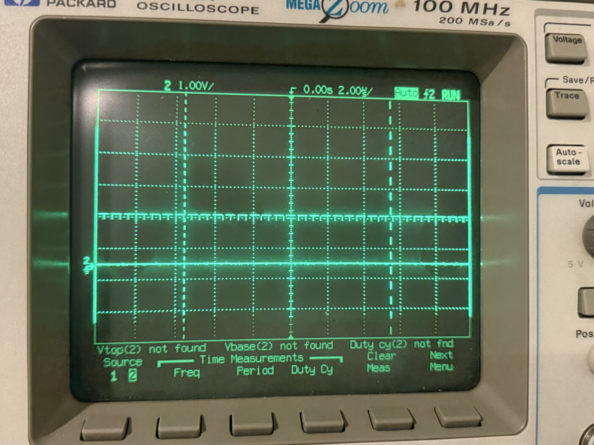
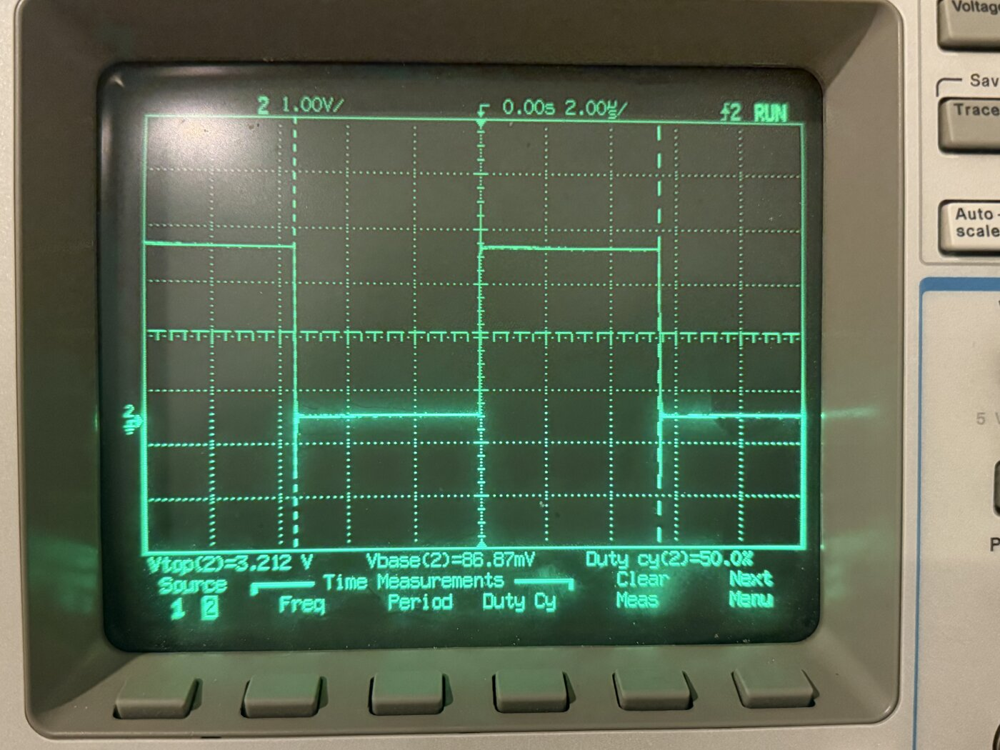
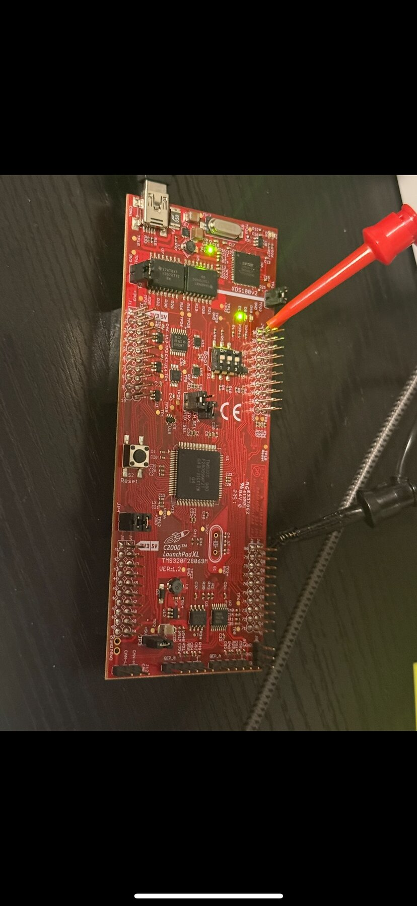

Personal / public technical project
TI C2000 actuator
controller.
A F28069M control demonstrator organized around explicit command handling, state behavior, PWM output, setpoint validation and fault response.
01 / Objective
Make control
behavior explicit.
The project documents a hardware-backed actuator controller on the TI C2000 F28069M. Its emphasis is on command flow, state transitions, output handling and observable fault behavior.
This is a public technical project. It is not presented as a certified safety product, client engagement or production deployment.
02 / Scope
Commands,
states, outputs.
Technical scope
Firmware implements command handling and explicit control states with ePWM output and setpoint validation. Python tooling and documented firmware files support review of the behavior.
Texas Instruments C2000 F28069M.
Public source and project documentation.



03 / Evidence
Review the
implementation.
Claims on this page are limited to the documented controller functions and technologies. Formal safety certification, product deployment and unverified reliability claims are intentionally excluded.
Start a technical discussion
Bring the
technical question.
Describe the system, its current stage and the evidence available. Secure file exchange can follow the initial discussion.
Start a technical discussion →Or write directly: info@herdersystemen.com